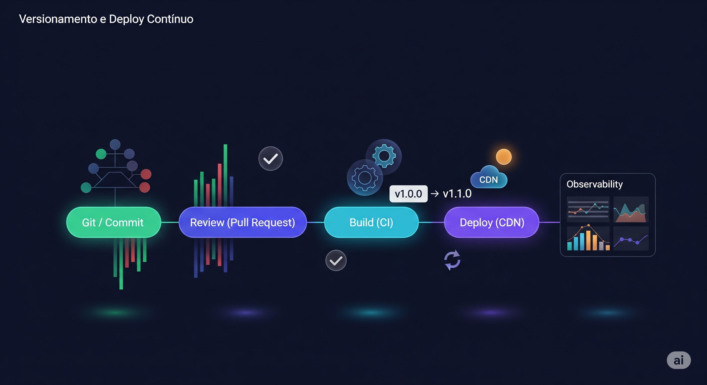

Estratégias de Versionamento e Deploy ContÃnuo para Conteúdo Técnico
Publicar conteúdo técnico em escala com qualidade consistente exige tratar artigos como software: versionar, revisar, testar, auditar, implantar e reverter com segurança. Se o seu fluxo ainda envolve pastas soltas, datas duplicadas ou “subir direto no servidorâ€, este guia foi escrito para você.
História rápida: três versões diferentes de um mesmo guia foram publicadas sem querer. Um cliente citou instruções que já tinham sido removidas, links quebraram e a equipe gastou a manhã caçando qual arquivo era o “certoâ€. A solução não foi criar mais camadas manuais de revisão, e sim tratar conteúdo como software: Git, branches de rascunho e revisão, validações automáticas e rollback instantâneo.
Esse mini-incidente ilustra o ponto central: sem versionamento disciplinado e pipeline de deploy contÃnuo, conteúdo técnico acumula dÃvida operacional invisÃvel. A seguir, estratégias práticas para implementar um fluxo profissional e escalável.
Por que versionar conteúdo técnico? (explicação fácil)
- Saber o histórico (rastreabilidade): quem alterou e por quê.
- Corrigir rápido: se algo saiu errado, voltar à versão anterior (rollback) em 1 clique.
- Padronizar nomes: evitar arquivo “final2_AGORA_CORRIGIDO.htmlâ€.
- Publicar sem medo: o sistema checa antes de ir ao ar.
- Medir impacto: comparar versão antiga vs. nova (visualizações / engajamento).
Diferença: versionar código vs. conteúdo (rapidinho)
No software a mudança pode “quebrar†o sistema. No conteúdo, a maior dor é informação errada ou desatualizada. Ainda assim isso afeta confiança e decisões. Usar hábitos de engenharia no texto reduz atrito e evita retrabalho.
Modelos de versionamento aplicáveis (formas de identificar versões)
- Data no slug (ex.:
2025_08_18_article_42.html): garante ordenação temporal. - ID incremental (article_042): útil para index rápido.
- Versão semântica simples (1.0.0 → grande mudança; 1.1.0 → adicionou algo; 1.1.1 → ajuste pequeno).
- Tag Git por marco editorial (ex.:
content-drop-2025-08). - Branch por campanha (ex.:
serie-observabilidade).
Branching sugerido (organizando fases)
- main: a “estante oficialâ€.
- content/draft/<slug>: rascunho em andamento.
- content/review/<slug>: revisão antes de publicar.
- hotfix/<slug>: correção urgente publicada rápido.
- archive/<ano>: guardado só para referência.
Estrutura de repositório (onde cada coisa fica)
content/
articles/
2025/
2025_08_18_article_42.md
2025_08_10_article_41.md
media/
article_41_01.png
article_42_01.png
includes/
callouts.html
scripts/
build.py
validate_front_matter.py
.github/workflows/
content-ci.yml
site/
(HTML gerado)
Metadata (front matter) recomendada (cabecalho de informações)
---
slug: estrategias-versionamento-deploy-conteudo
id: 42
version: 1.0.0
author: Cara Core Informática
created_at: 2025-08-18
updated_at: 2025-08-18
status: published
keywords: [versionamento, deploy contÃnuo, conteúdo técnico, ci/cd]
summary: Guia de estratégias para versionar e automatizar deploy de conteúdo técnico.
---
Pipeline (linha de montagem) – passos automáticos
- Checar formato: cabeçalho existe e nome não repete.
- Ver links: internos/externos funcionando.
- Transformar: Markdown vira HTML pronto.
- Atualizar listas: página de artigos, sitemap, feed.
- Testar rápido: HTML válido e nada indevido.
- Empacotar: gerar pacote estático final.
- Publicar: enviar ao local do site (servidor/CDN).
- Limpar cache: se usa CDN, limpar o velho.
- Avisar: mandar alerta de sucesso ou erro.
Exemplo GitHub Actions simplificado
name: Content CI
on:
push:
branches: [ main ]
paths: [ 'content/**' ]
jobs:
build:
runs-on: ubuntu-latest
steps:
- uses: actions/checkout@v4
- uses: actions/setup-python@v5
with: { python-version: '3.11' }
- name: Install deps
run: pip install -r requirements.txt
- name: Validate front matter
run: python scripts/validate_front_matter.py
- name: Build HTML
run: python scripts/build.py
- name: Publish (Pages)
uses: actions/upload-pages-artifact@v3
if: success()
- name: Deploy
uses: actions/deploy-pages@v4
Script Python (exemplo opcional para subir versão)
import re, sys, pathlib
LEVEL = sys.argv[1] if len(sys.argv) > 1 else 'patch'
FILE = pathlib.Path('content/articles/2025/2025_08_18_article_42.md')
text = FILE.read_text(encoding='utf-8')
match = re.search(r'version:\s*(\d+)\.(\d+)\.(\d+)', text)
if not match:
raise SystemExit('version not found')
major, minor, patch = map(int, match.groups())
if LEVEL == 'major':
major, minor, patch = major + 1, 0, 0
elif LEVEL == 'minor':
minor, patch = minor + 1, 0
else:
patch += 1
new_version = f'{major}.{minor}.{patch}'
text = re.sub(r'version:\s*\d+\.\d+\.\d+', f'version: {new_version}', text)
FILE.write_text(text, encoding='utf-8')
print('Updated to', new_version)
Checklist simples antes de publicar
- [ ] Front matter completo.
- [ ] Links internos resolvidos.
- [ ] Sem conteúdo duplicado.
- [ ] Imagens otimizadas (peso < 250KB).
- [ ] SEO: title, description, canonical, og:image.
- [ ] Versão incrementada se alteração relevante.
- [ ] Aprovado por revisão técnica + editorial.
Fluxo editorial sugerido (passo a passo humano)
- Rascunho: criar conteúdo inicial.
- Revisão técnica automática: ferramentas checam formato.
- Revisão humana: clareza e tom.
- Publicação: entra no site via pipeline.
- Acompanhar: ver acessos, ajustar se preciso.
Métricas para acompanhar (o que vale medir)
- Lead time de publicação: criação → produção.
- Taxa de rollback: quantas publicações precisam de correção rápida.
- Tempo médio de atualização (MTTU) pós mudança de tecnologia referenciada.
- Erros de validação por PR: tendência de qualidade.
- Engajamento por versão: views antes/depois de atualização.
Rollback e histórico (voltar atrás sem drama)
Rollback ideal: git revert do commit problemático + regeneração automática. Para correções rápidas, usar hotfix/<slug>. Evite editar direto em produção — perde rastreabilidade e invalida métricas.
Riscos comuns e como evitar
- Slug duplicado: validador de unicidade no CI.
- Links quebrados: crawler interno (ex.:
scripts/link_check.py). - Imagens pesadas: pipeline de compressão.
- Metadados inconsistentes: schema JSON para front matter.
- Deploy parcial: publicar sempre o build completo imutável.
Boas práticas adicionais (extras que ajudam)
- Separar conteúdo fonte de HTML gerado.
- Usar hash de build ou data no diretório de saÃda para cache busting.
- Gerar
sitemap.xmle feed (RSS/Atom) no pipeline. - Inserir dados estruturados (Schema.org Article).
- Automatizar verificação de termos proibidos (ex.: linguagem insegura, claims sem fonte).
FAQ rápido
Preciso de semantic version para todo artigo?
Não obrigatório. Útil quando há referência externa ou integração que depende de estado estável (ex.: documentação de API).
Como lidar com conteúdo obsoleto?
Marcar status = deprecated, adicionar aviso no topo e link para versão nova.
E se eu só corrigir um typo?
Atualize updated_at e, se usar semantic content version, incremente o patch.
Seção colaborativa
Este artigo é colaborativo. Sugestões bem-vindas:
- Workflows de CI reais (GitLab, Jenkins, Azure).
- PolÃticas de revisão/redação de times.
- Métricas adicionais de governança.
- Scripts de validação ou geração incremental.
Envie exemplos por e-mail ou LinkedIn para possÃvel inclusão.
Próximos passos recomendados
- Inventariar conteúdo atual e normalizar nomes.
- Adicionar front matter mÃnimo em todos os arquivos.
- Criar script de build/validação.
- Configurar pipeline CI.
- Definir polÃtica de branching e revisão.
- Documentar playbook de rollback.
Glossário rápido
- Versionar: guardar cada mudança com histórico.
- Slug: nome limpo usado no link do artigo.
- Front matter: bloco inicial de dados (autor, data, etc.).
- Branch: linha de trabalho paralela para editar sem afetar o principal.
- Deploy: ato de publicar/atualizar no site.
- Rollback: voltar para uma versão anterior.
- Pipeline: sequência automática de passos.
- CI/CD: automação para testar (CI) e publicar (CD).
- CDN: rede que entrega o site mais rápido em vários lugares.
- Métrica: número usado para acompanhar evolução.
Contato
- E-mail: suporte@caracore.com.br
- Site: www.caracore.com.br
- LinkedIn: Cara Core Informática